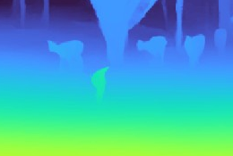
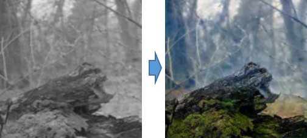
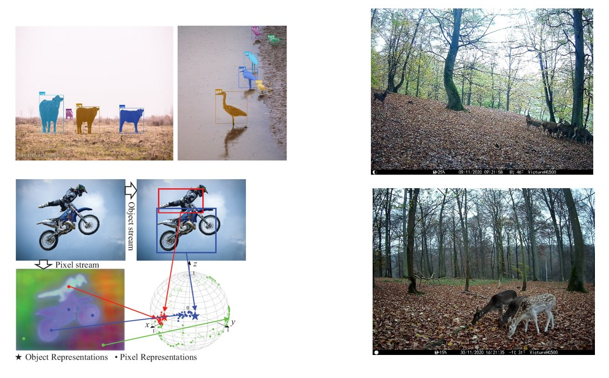
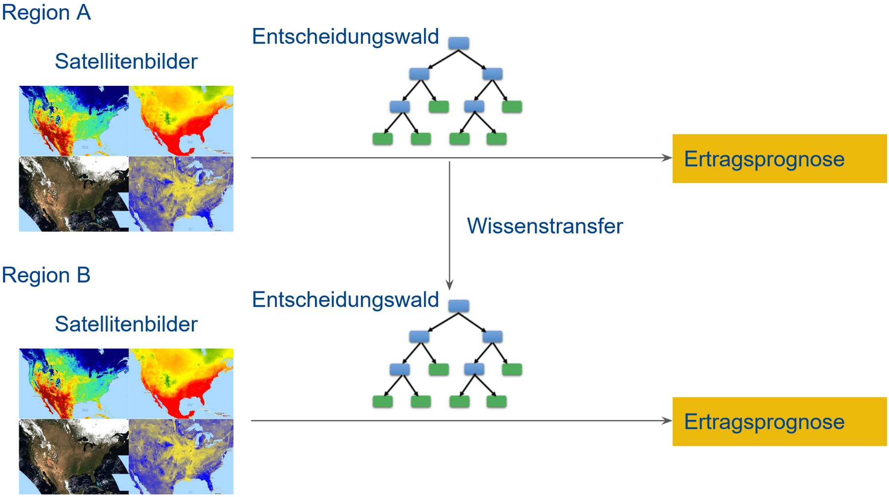

BA-INF 051 - Projektgruppe Intelligente Sehsysteme
PD Dr. Volker Steinhage
Dienstags, 14-16 Uhr, Seminarraum 1.012
Vorbesprechung: Di, 13.09.22, 14 Uhr, via https://bbb.informatik.uni-bonn.de/b/vol-ung-npn
Themen:
|

|
Animal Presence-Absence mittels RGB-D-Daten Zur Beobachtung von Tieren werden häufig Kamerafallen eingesetzt, die mittels Bewegungsmelder auslösen. Diese Bewegungsmelder lösen jedoch auch häufig ohne Bewegung aus, was zu viel überflüssigem Bildmaterial führt. Hier soll dieses überflüssige Bildmaterial aussortiert werden. Dazu soll jedes Bild mittels des Deep-Learning-Ansatzes zur Knowledge Distillation (Hinton et al. 2015) als “enthält Tier” oder “enthält kein Tier” klassifiziert werden. Dabei steht als Eingabe nicht nur ein reguläres Intensitätsbild, sondern auch ein Tiefenbild, welches für jeden Pixel die Distanz zur Kamera kodiert, zur Verfügung. Es soll evaluiert werden, inwiefern die zusätzlichen Tiefeninformationen zu einer Verbesserung der Erkennung beitragen. Als “Teacher” im Rahmen der Knowledge Distillation soll der “MegaDetector” (Beery et al. 2019) dienen.
|
|

|
Kolorierung von Nah-Infrarotbildern Wild- und Überwachungskameras verwenden häufig unsichtbare Infrarotbeleuchtung und monochrome Bildsensoren um bei Nacht zumindest Grauwertbilder aufnehmen zu können. Für viele anschließende Aufgaben wie Objekterkennung sind Farbbilder allerdings besser geeignet. Daher gibt es bereits diverse, oft auf Deep Learning basierende Ansätze, um solche Aufnahmen zu kolorieren (Limmer and Lensch 2016, Dong et al. 2018, Mehri and Sappa 2019). Diese Ansätze sollen vergleichend Evaluiert und auf die Kolorierung von Wildtieraufnahmen angepasst werden. Hierfür sind gute Python-Kenntnisse erforderlich und Erfahrungen mit PyTorch vorteilhaft. Bildquelle: Mehri and Sappa 2019
|
|  | Instance Segmentation (2 Themen / 2 Projektgruppenteilnehmende)
Ziel dieser Projektgruppe ist die Untersuchung eines Instance Segmentation Verfahrens, das auf Künstlichen Neuronalen Netzen basiert. Die Aufgabe einer Instance Segmentation ist es, Objekte in einem Bild oder Video zu detektieren und den genauen Umriss, die Instance Mask dieses Objektes, zu bestimmen. So können Individuen besser voneinander unterschieden werden.
|
|  | Wissenstransfer für Entscheidungswälder (2 Themen / 2 Projektgruppenteilnehmende)
Satellitenbilder sind eine verlässliche und kostengünstige Datenquelle zur Ertragsprognose. Ziel dieser Projektgruppe ist das Untersuchen verschiedener Verfahren für einen Wissenstransfer zwischen der Ertragsprognose in verschiedenen Regionen.
|
Termine:
- Priolisten der Interessierten per Email mit Betreff "Prios PG" bis Fr, 16.09.2022, 22 Uhr
- Zuordnungsmitteilung bis Di, 20.09.2022, 18 Uhr
- 2-seitig. Expose (Ziel,Daten und Methoden,Zeitplanung) bis Di, 27.09.2022, 14 Uhr
- Start der wöchentl. PG-Jour Fixe: Di, 11.10.2022, 14.00 s.t. mit Präsentationen der ersten (Zwischen-)Ergebnisse
| Home | News | Teaching | Projects | Publications | Team |